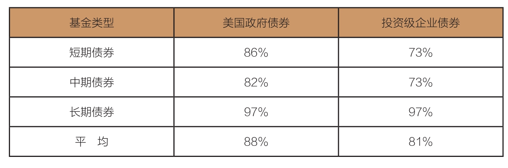

利率变动风险如何成为债券市场投资者“永远的痛”？
聪明的投资者为什么要持有债券？原因之一是长期由一系列短期构成，而在许多短时间段里，债券提供了比股票更高的收益率。
到此为止，我对常识的应用大部分以股票市场、股票共同基金和股票指数基金为对象。不过，我提到的冷酷但公正的数学规则，同样适用于债券基金，甚至更具说服力。
原因其实很简单。影响股票市场和每只个股的因素不计其数，但债券市场投资者获取的收益，基本只受一个决定性因素的影响：利率水平。
在利率面前，固定收益基金的经理几乎无所作为，他们根本就不能影响市场利率。如果他们不喜欢市场利率，那么唯一能做的就是给财政部或是美联储打电话，或是尝试改变市场供求关系，但这根本就不可能。
历史经验告诉我们，就长期而言，股票通常能够提供比债券更高的收益。在未来10年里，预期这个关系仍然会存在下去，虽然根据理性的预期，股票和债券的未来收益几乎都会明显落后于历史水平。
就像第9章提到的，我预估在未来10年里，债券的年均收益率是3.1%。另外，1900年以来，债券的年均收益率是5.3%；1974年以来，债券的年均收益率是8%；在未来10年里，债券的年均收益率很可能是3.1%左右。
既然如此，聪明的投资者为什么要持有债券？
首先，长期由一系列短期构成，而在许多短时间段里，债券提供了比股票更高的收益率。在1900—2017年的117年里，债券胜过股票42年；在112个滚动式5年期里，债券超过股票29次；甚至在103个滚动式15年期里，债券也超过股票13次。
其次，持有债券更重要的原因是债券可以降低投资组合的波动性，在市场大幅下跌时提供保护。一个股债平衡型组合的保守特性，可能降低投资者做出不理智行为的概率（比如，在市场暴跌时恐慌性抛出股票）。
再次，虽然目前债券利率已经接近20世纪60年代早期以来的最低水平，但债券的当期利率（3.1%）仍然要超过股票的收益率（2%）。
事实上，即使在当下的低利率环境下，债券仍保有竞争力。债券超过股票的正向息差是1.1%，相当接近40年来债券的利率优势——1.4%（1974年以来，债券的平均利率为6.9%，股票的平均利率为5.5%）。
一旦我们考虑到这些因素，问题就会从“为什么持有债券”变成“应该持有多少债券”，我们将在本书的第18章中解答这个问题。
整体而言，债券基金经理提供的总收益，只能与利率决定的基准收益率持平。诚然，可能确实有少数基金经理会做得更好，甚至长期维持相对优异的表现，但这可能是因为他们特别聪明、运气好或者愿意承担额外的风险。
唉！不当决策总是不请自来，并损害长期收益（经常发生均值回归）。进一步说，即使债券基金经理想让债券总收益率多增长几个基点，他们也很难抵消由此而增加的费用、管理费和手续费。
尽管这些成本使得增加收益的任务变得异常困难，但是在超额收益的诱惑下，那些超级自信的债券基金经理还是甘愿承担更高的风险：延长投资组合中的债券到期日[长期债券（比如30年）的价格波动性要高于短期债券（比如2年），但收益率通常也更高]。
更糟糕的是，在超额收益的诱惑下，他们有可能降低投资组合的质量，如减少美国国库券（信用评级为AA+）或投资级企业债券（信用评级在BBB以上）的比例，增加低于投资级债券（信用评级在BB以下），甚至垃圾债券（信用评级在CC以下或没有信用评级）的比例。过度依赖垃圾债券以期增加总收益，投资组合将承担极高的风险（当然！）。投资者如果为了增加收益想要配置一些垃圾债券，一定要控制好比例，千万不能太高！
债券共同基金通常会向投资者提供三种（或更多）选择，以权衡收益和风险。短期组合适用于愿意牺牲部分利息，以降低波动风险的投资者；长期组合适用于寻求最多利息，并能接受高波动性的投资者；中期组合在收益和市场波动性之间寻求平衡。这些选择有利于债券基金吸引持有不同策略的投资者。
总之，依照债券的期限和信用评级，我们可以赚取相应的收益。在扣除费用、营运成本和手续费之后，收益将会减少。就债券来说，布兰蒂斯的警告更有意义：“哦，陌生人，请记住，数学永远是科学之父、安全之母。”
不计其数的债券基金考验着你的耐心，这就需要我们对这些基金进行评估。在本章，我们将讨论3类主要的持有期限（短期、中期和长期）和2种主要的质量类型（美国政府债券和投资级企业债券）共6个类别的债券基金。
第3章曾经提到，90%的主动型基金的收益落后于它们的基准指数，就像标准普尔在它的SPIVA报告中写的那样。
SPIVA报告也对比了不同类型的债券共同基金与它们参考的基准指数的收益表现。
2001—2016年这15年里，债券指数的业绩相当可观，平均超过表14-1中6个类别——短期、中期、长期的美国政府债券和投资级企业债券——85%的主动型债券基金。这些参考指数的表现，也超过了84%市政债券基金和96%的高利率债券基金。
表14-1 主动型债券基金的表现落后于标准普尔500指数的比例，2001—2016年

据SPIVA的资料估计，过去15年，中短期国债和投资级企业债券的收益相对于指数基金而言，每年落后约0.55%。普通债券基金每年支付的成本约为0.1%，主动型债券基金的年费率平均是0.75%。两类基金的费率平均相差0.65%，稍微超过了业绩差距。低成本再一次彰显了指数基金的优势。
第一只整体债券市场指数基金创设于1986年，至今仍然是资产规模最大的基金，其基准参考指数是彭博巴克莱美国综合债券指数（Bloomberg Barclays U.S. Aggregate Bond Index）。几乎所有主要的整体债券市场指数基金都追踪它。这些指数基金质量极佳（63%的美国政府担保债券，5%的AAA级企业债券，32%的AA级到BAA级债券，没有低于投资级的债券）。过去10年，整体债券市场指数基金的年收益率为4.41%，比它追踪的目标指数4.46%的年均收益率，只落后0.05%，非常相似的表现。
高质量投资组合派发的利息，不免低于低质量投资组合。整体债券市场指数基金的利息在2017年年中是2.5%，低于之前提到的债券市场代表性投资组合3.1%的当期利率。差别是：在我们之前构建的债券投资组合中，美国政府债券占比较低（50%），投资级企业债券占比较高，因此，当期利率也会更高。
为了实现这样一个1 : 1比例的投资组合，并且当期利率高于整体债券市场指数基金，投资者可以考虑用75%的整体债券市场指数基金和25%的投资级企业债券指数基金构建投资组合。
现实是，债券指数基金的价值与股票指数基金的价值类似：分散投资化、极低的成本、有纪律的投资组合活动、节税效率、以股东利益为优先的长期投资策略。正是这些符合常识的特质，使得指数基金能够保证投资者在股票市场和债券市场上获取合理的收益。
的确，本书先前讨论的有关股票基金的许多内容，可以直接套用在与债券相关的部分，尤其是第5章、第10章和第13章。这些法则是通用的。
债券指数投资正在快速增长。彼得·费雪（Peter Fisher）是全球基金管理巨头黑石的固定收益部门前主管。他发现：“我们正进入指数投资的第二个阶段。这个世界充斥着不确定性，投资者应该让他们拥有的（债券）投资组合更简洁，以便在夜晚安然入睡。”
债券投资指数基金的优秀业绩有目共睹。虽然没有过多提到，但注册金融分析师沃尔特·古德（Walter Good）和罗伊·赫尔曼森（Roy Hermansen）的《投资成功的指数化之路》（Index Your Way to Investment Success）一书确认了本章观点：
“只要比较一下费率、交易成本和手续费，我们就可以认识到债券指数基金的成本优势……与主动型基金相比，指数基金的年均收益率要高出1.2%。
“通过数据，我们可以清晰地看到，主动型债券基金经理面前的挑战……并且透露主动型债券基金经理需要争取多少额外收益，才能获得和指数债券基金相同的收益。”
蒂莫西·海尔（Timothy Hale）是《更聪明的投资——简单的决策带来更出色的结果》（Smarter Investing-Simple Decisions for Better Results）一书的作者。他指出：“我们不应该轻视债券指数投资的效果，然而迄今为止，这种模式尚未成为市场的主流。所有的证据都无可争议地站在指数基金一边……1988—1998年，债券指数基金的年均收益率为8.9%，与此同时，主动型债券基金的年均收益率为8.2%。在这个市场上，85%的主动型债券基金都已成为指数基金的手下败将。而这两者之间的差异，主要来源于费用。”